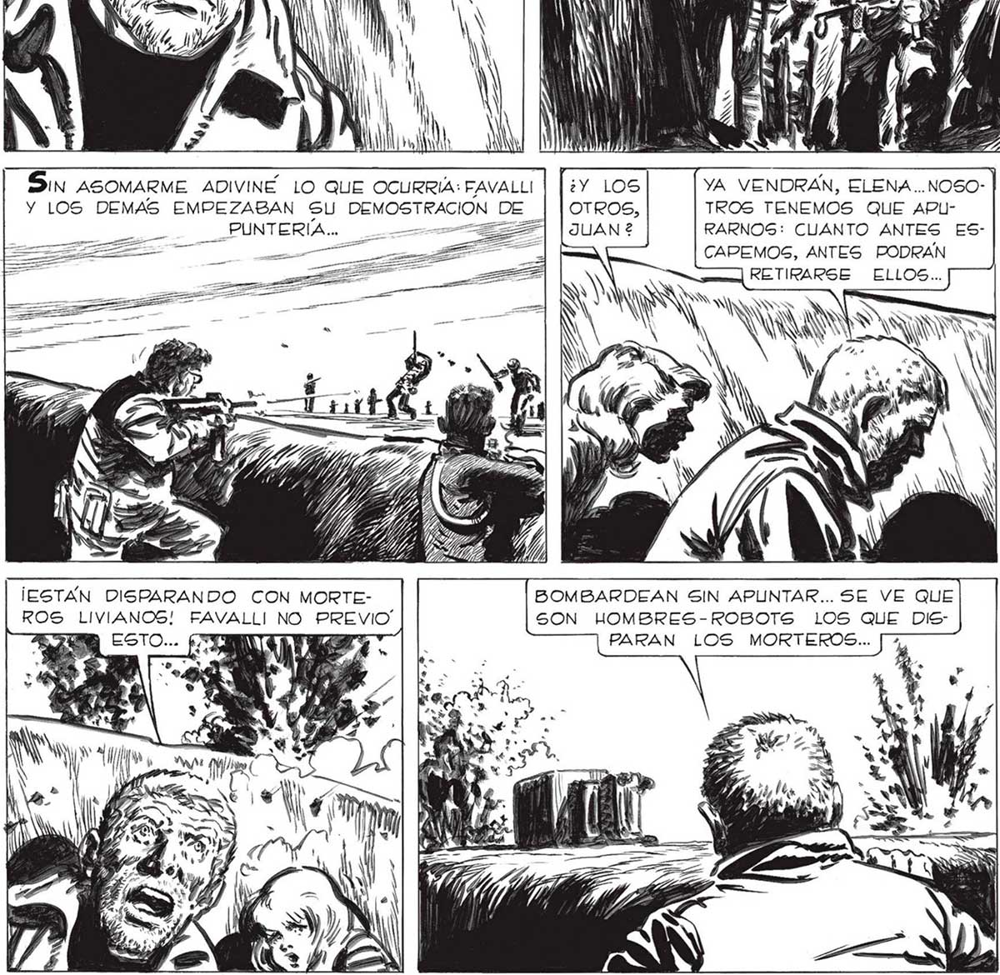
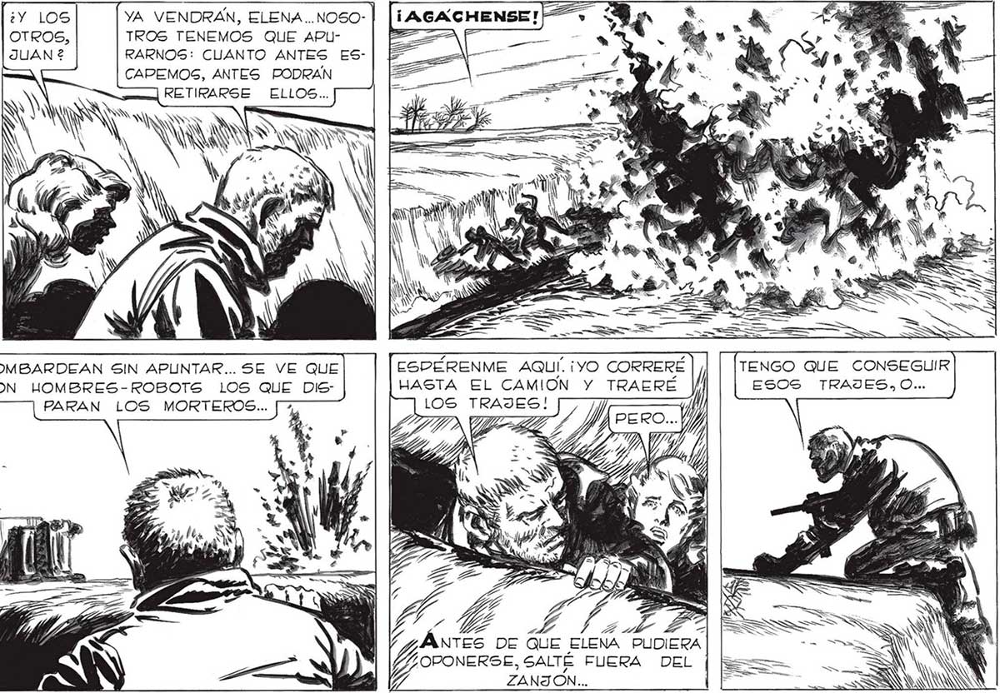

¡VENGAN! TENEMOS QUE VOLVER AL CAMION A BL CAR LOS TRAJES... AGACHENSE,QUE LOS HOMBRES: ROBOTS NO DEBEN VERNOS... / Y UN MW SE FUERON... YO DEBERÍA IR CON ELLOS.. | PERO... FAVALLI TIE| NE RAZON... DEBO CUIDAR DE ELENA Y DE MARTITA... 1 l le No uuy LeJos estaLto UNA DESCARGA... Sin ASOMARME ADIVINÉ LO QUE OCURRIA: FAVALLI | |: YA VENDRAN, ELENA..NOSO- | |[¡AGACHENSE! Y LOS DEMAS EMPEZABAN SU DEMOSTRACION DE TROS TENEMOS QUE APU- E AZZZ>A RARNOS: CUANTO ANTES ES[==] CAPEMOS, ANTES PODRAN = in SÓN NN Nay RS : Ñ NUN y an k N Div á WN, 4 y ar l » Y P y y e > S N 4% o a, 108 SS A AZ Ad po d O , 7h 6 A, ' e, S ; “gg k ó “Y ES AN a e 4 A TDS $ =y ¡ESTÁN DISPARANDO CON MORTE- BOMBARDEAN SIN APUNTAR... SE VE QUE ESPEÉRENME AQUÍ. ¡yO CORRERÉ TENGO QUE CONSEGUIR ROS LIVIANOS! FAVALLI NO PREVIO SON HOMBRES-ROBOTS LOS QUE DIS- HASTA EL CAMION Y TRAERE ESOS TRAJES, O... PARAN LOS MORTEROS... > ad 4, vd DE QUE ELENA PUDIERA 347

